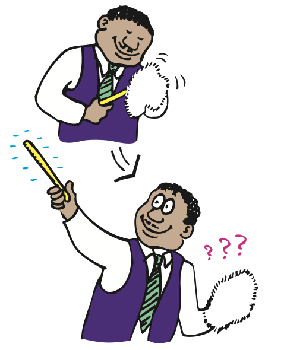

Conservation of Charge
A basic rule of physics is that, whenever something is charged, no electrons are created or destroyed. Electrons are simply transferred from one material to another. Charge is conserved. In every event, whether large scale or at the atomic and nuclear level, the principle of conservation of charge has always been found to apply. No case of the creation or destruction of net electric charge has ever been found. The conservation of charge ranks with the conservation of energy and momentum as a significant fundamental principle in physics.

In a neutral atom, there are as many electrons as protons, so there is no net charge. The positive balances the negative exactly. If an electron is removed from an atom, then the atom is no longer neutral. The atom then has one more positive charge (proton) than negative charge (electron) and is said to be positively charged.1 A charged atom is called an ion. A positive ion has a net positive charge. A negative ion, an atom with one or more extra electrons, is negatively charged.
So we see that an object that has unequal numbers of electrons and protons is electrically charged. If it has more electrons than protons, it is negatively charged. If it has fewer electrons than protons, it is positively charged.
Interestingly, any electrically charged object has an excess or deficiency of some whole number of electrons—meaning the charge of the object is a whole-number multiple of the charge of an electron. Electrons cannot be divided into fractions of electrons. Charge is “grainy,” or made of elementary units called quanta. We say that charge is quantized, with the smallest quantum of charge being that of the electron (or proton). In all matter, no smaller units of charge have ever been observed.2 All charged objects to date have a charge that is a whole-number multiple of the charge of a single electron or proton.
Electronics Technology and Sparks
Electric charge can be dangerous. Two hundred years ago, young boys called powder monkeys ran barefooted below the decks of warships to bring sacks of black gunpowder to the cannons above. It was ship law that this task be done barefoot. Why? Because it was important that no static charge build up on the powder on the boys’ bodies as they ran to and fro. Bare feet scuffed the decks much less than shoes and assured no charge accumulation that might produce an igniting spark and an explosion.
Static charge is a danger in many industries today—not because of explosions but because delicate electronic circuits may be destroyed by static charges. Some circuit components are sensitive enough to be “fried” by sparks of static electricity. Electronics technicians frequently wear clothing of special fabrics with ground wires between their sleeves and their socks. Some wear special wristbands that are connected to a grounded surface so that static charges will not build up—when moving a chair, for example. The smaller the electronic circuit, the more hazardous are sparks that may short-circuit the circuit elements.